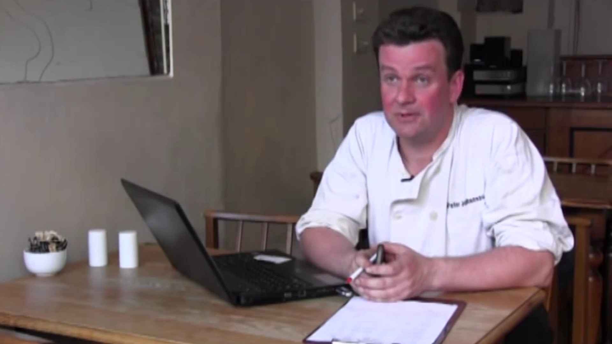
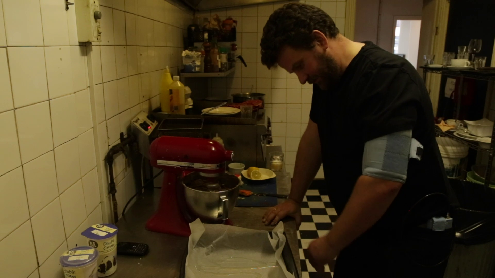
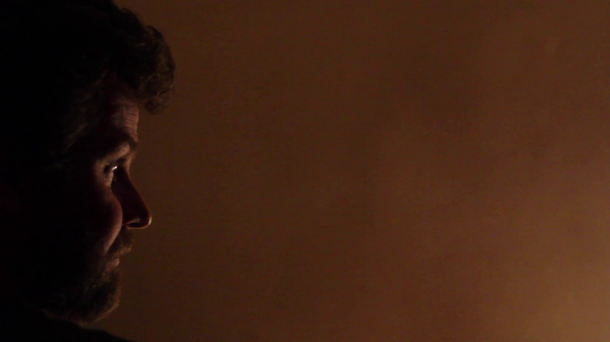
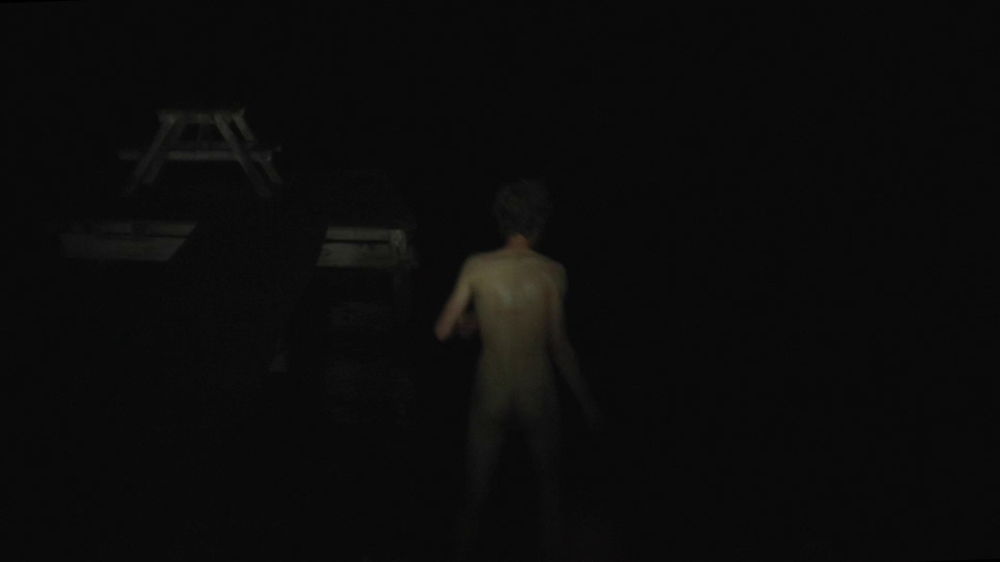

31mins, 2020
As his business begins to collapse, a Swedish restaurateur retreats into memories of an idyllic childhood and an idealised Scandinavian identity. But can this imagined refuge withstand the pressures of his present life?
An essay film combining documentary and fiction, The Longest Journey is the Journey Inward was developed over eight years, from footage filmed in Sweden and London. Returning to the material after several years, the filmmaker found new possibilities in images whose original purpose had become uncertain. The film's exploration of memory and identity is reflected in the passage of time through which it came into being.
With thanks to Peter Johansson, and the staff at Johansson's.
Installed at the exhibition Butterfly Blue Goodbye, ASC Brixton, 2020
WR SAUNDERS 2020